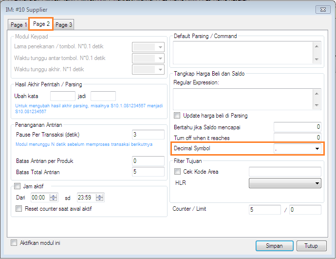

Simbol Desimal (sen)
Harga suatu produk di luar negeri tidak jarang mengandung bilangan desimal/pecahan (sen) yang di beberapa kasus kurang dikenali oleh OtomaX dimana mengakibatkan salah hitung. Di indonesia problem tersebut saat ini belum terjadi, mungkin baru akan terjadi dikala rencana redominasi rupiah direalisasikan kelak. Dengan adanya fitur Simbol Desimal mulai versi 4.0.2 permasalahan tersebut bagi pengguna OtomaX luar negeri dan dalam negeri telah terselesaikan. Tertarik dengan fitur ini dan ingin memiliki OtomaX silahkan klik disini.
Fitur ini berada di masing - masing modul yang digunakan mengambil stok ke supplier seperti Dial, IM Hybrid HTH, IP Client dan lainnya. Pengaturannya sebagai berikut:
- Perhatikan harga beli produk di balasan supplier bilangan desimalnya menggunakan simbol apa?... menggunakan simbol . (titik) seperti: 10,200.00, 10,200; atau simbol , (koma) seperti: 10.200,00, 10.200?.
-
Pilih modul -> klik kanan -> pilih Setting -> klik Page 2.

Pada Decimal Symbol pilih simbol . (titik) jika bilangan desimal di harga beli menggunakan tanda . (titik); dan pilih simbol , (koma) jika bilangan desimal di harga beli menggunakan tanda , (koma). Apabila harga beli seperti: 10200, maka bebas memilih simbol . (titik) atau simbol , (koma).
- Klik tombol Simpan untuk menyimpan perubahan pengaturan.
- Selesai
Harap dicatat, tidak mengatur fitur Decimal Symbol dapat mengakibatkan salah hitung, sebaiknya Anda menentukan simbol desimal di semua modul supplier.